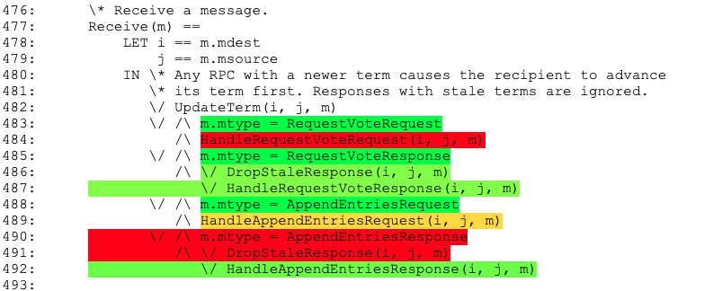

Apalache Manual
Authors: Igor Konnov, Jure Kukovec, Andrey Kuprianov, Shon Feder
Contact: {igor,andrey,shon} at informal.systems, jkukovec at forsyte.at
Apalache is a symbolic model checker for TLA+. (Still looking for a better tool name.) Our model checker is a recent alternative to TLC. Whereas TLC enumerates the states produced by the behaviors of a TLA+ specification, Apalache translates the verification problem to a set of logical constraints. These constraints are solved by an SMT solver, for instance, by Microsoft's Z3. That is, Apalache operates on formulas (i.e., symbolicly), not by enumerating states one by one (i.e., state enumeration).
Apalache is working under the following assumptions:
- As in TLC, all specification parameters are fixed and finite, i.e., the system state is initialized with integers, finite sets, and functions of finite domains and co-domains.
- As in TLC, all data structures evaluated during an execution are finite, e.g., a system specification cannot operate on the set of all integers.
- Only finite executions of bounded length are analyzed.
Getting Started
Table of Contents
- Shall I use Apalache or TLC?
- System requirements
- Installation
- An example of a TLA+ specification
- Setting up specification parameters
- Running the tool
- Principles of symbolic model checking with Apalache
- The Apalache module
- Profiling your specification
- Five minutes of theory
- Supported language features
1. Shall I use Apalache or TLC?
We recommend starting with TLC. It is mature, well-documented, and well-integrated into TLA+ Toolbox. Once you have debugged your TLA+ specification, and TLC is still producing too many reachable states, switch to Apalache. We are using this approach at Informal Systems.
2. System requirements
Every commit to master and unstable is built with Travis CI on MacOS (xcode9.3 and JDK 1.8.0) and Linux (OpenJDK8). If you would like to run Apalache in Windows, use a docker image. Check the Docker manual and the section on Using a docker image for details.
As Apalache is using Microsoft Z3 as a backend SMT solver, the required memory largely depends on Z3. We recommend to allocate at least 4GB of memory for the tool.
3. Installation
There are two ways to run Apalache: (1) Download and run a docker image, or (2) Build Apalache from sources and run the compiled package. If you just want to try the tool, we recommend using the docker image. If you would like to run the tool on a daily basis or to contribute to the project, we recommend building the project from the source.
3.1. Using a docker image
Starting with release 0.6.0, we will publish Docker images for every release :sunglasses:
To get the latest Apalache image, issue the command:
docker pull apalache/mc
Running the docker image
To run an Apalache image, issue the command:
$ docker run --rm -v <your-spec-directory>:/var/apalache apalache/mc <args>
The following docker parameters are used:
-
--rmto remove the container on exit -
-v <your-spec-directory>:/var/apalachebind-mounts<your-spec-directory>into/var/apalachein the container. This is necessary for Apalache to access your specification and the modules it extends. From the user perspective, it works as if Apalache was executing in<your-spec-directory>. In particular the tool logs are written in that directory.When using SELinux, you might have to use the modified form of
-voption:-v <your-spec-directory>:/var/apalache:z -
apalache/mcis the APALACHE docker image name. By default, thelateststable version is used; you can also refer to a specific tool version, e.g.,apalache/mc:0.6.0orapalache/mc:unstable -
<args>are the tool arguments as described in Running the tool.
We provide a convenience wrapper for this docker command in
script/run-docker.sh. To run the latest image using the script, execute
$ $APALACHE_HOME/script/run-docker.sh <args>
To specify a different image, set APALACHE_TAG like so:
$ APALACHE_TAG=foo $APALACHE_HOME/script/run-docker.sh <args>
Setting an alias
If you are running Apalache on Linux :penguin: or MacOS :green_apple:, you can define this handy alias in your rc file, which runs Apalache in docker while sharing the working directory:
# using the latest stable
$ alias apalache="docker run --rm -v $(pwd):/var/apalache apalache/mc"
# using the latest unstable
$ alias apalache="docker run --rm -v $(pwd):/var/apalache apalache/mc:unstable"
Using the unstable version of Apalache
The development of Apalache proceeds at a high pace, and we introduce a
substantial number of improvements in the unstable branch before the next stable
release. Please refer to the change
log and
manual
on the unstable branch for the description of the newest features. We
recommend using the unstable version if you want to try all the exciting new
features of Apalache. But be warned: It is called "unstable" for a reason. To
use unstable, just type apalache/mc:unstable instead of apalache/mc
everywhere.
Do not forget to pull the docker image from time to time:
docker pull apalache/mc:unstable
Run it with the following command:
$ docker run --rm -v <your-spec-directory>:/var/apalache apalache/mc:unstable <args>
To create an alias pointing to the unstable version:
$ alias apalache="docker run --rm -v $(pwd):/var/apalache apalache/mc:unstable"
Building an image
For an end user there is no need to build an Apalache image. If you like to
produce a modified docker image, take into account that it will take about 30
minutes for the image to get built, due to compilation times of Microsoft Z3. To
build a docker image of Apalache, issue the following command in
$APALACHE_HOME:
$ docker image build -t apalache:0.7.0 .
3.2. Building from source
- Install
git. - Install OpenJDK8 or Zulu JDK8.
- Apalache currently requires Scala 12.0 so you must install version 8 of Java, otherwise Scala will not compile! See the compatibility table.
- Install Apache Maven.
- On Debian Linux or Ubuntu:
sudo apt-get install maven. - On Arch:
sudo pacman -Syu maven
- On Debian Linux or Ubuntu:
- Clone the git repository:
git clone https://github.com/informalsystems/apalache.git. - Change into the project directory:
cd apalache. - Run
make. - Optionally install direnv and run
direnv allow - Confirm you can run the executable. It should print the inline CLI help message.
- If you used
direnv, thenapalache-mcwill be in your path. - Otherwise, run
./bin/apalache-mc.
- If you used
4. An example of a TLA+ specification
To illustrate the features of Apalache, we use the following TLA+ specification,
which can be found in test/tla/y2k.tla:
-------------------------------- MODULE y2k --------------------------------
(*
* A simple specification of a year counter that is subject to the Y2K problem.
* In this specification, a registration office keeps records of birthdays and
* issues driver's licenses. As usual, a person may get a license, if they
* reached a certain age, e.g., age of 18. The software engineers never thought
* of their program being used until the next century, so they stored the year
* of birth using only two digits (who would blame them, the magnetic tapes
* were expensive!). The new millennium came with new bugs.
*
* This is a made up example, not reflecting any real code.
* To learn more about Y2K, check: https://en.wikipedia.org/wiki/Year_2000_problem
*
* Igor Konnov, January 2020
*)
EXTENDS Integers
CONSTANT BIRTH_YEAR, \* the year to start with, between 0 and 99
LICENSE_AGE \* the minimum age to obtain a license
ASSUME(BIRTH_YEAR \in 0..99)
ASSUME(LICENSE_AGE \in 1..99)
VARIABLE year, hasLicense
Age == year - BIRTH_YEAR
Init ==
/\ year = BIRTH_YEAR
/\ hasLicense = FALSE
NewYear ==
/\ year' = (year + 1) % 100 \* the programmers decided to use two digits
/\ UNCHANGED hasLicense
IssueLicense ==
/\ Age >= LICENSE_AGE
/\ hasLicense' = TRUE
/\ UNCHANGED year
Next ==
\/ NewYear
\/ IssueLicense
\* The somewhat "obvious" invariant, which is violated
Safety ==
hasLicense => (Age >= LICENSE_AGE)
\* This is probably the only invariant we can formulate, usually, it is called TypeOK
Inv ==
/\ year \in 0..99
/\ hasLicense \in BOOLEAN
=============================================================================
5. Setting up specification parameters
Similar to TLC, Apalache requires the specification parameters to be restricted to finite values. In contrast to TLC, there is a way to initialize parameters by writing a symbolic constraint, see Section 5.3.
5.1. Using INSTANCE
You can set the specification parameters, using the standard INSTANCE
expression of TLA+. For instance, below is the example
test/tla/y2k_instance.tla, which instantiates
y2k.tla:
---------------------------- MODULE y2k_instance ----------------------------
VARIABLE year, hasLicense
INSTANCE y2k WITH BIRTH_YEAR <- 80, LICENSE_AGE <- 18
=============================================================================
The downside of this approach is that you have to declare the variables of the extended specification. This is easy with only two variables, but can quickly become unwieldy.
5.2. Convention over configuration
Alternatively, you can extend the base module and use overrides:
---------------------------- MODULE y2k_override ----------------------------
EXTENDS y2k
OVERRIDE_BIRTH_YEAR == 80
OVERRIDE_LICENSE_AGE == 18
=============================================================================
5.3. ConstInit predicate
This approach is similar to the Init operator, but applied to the
constants. We define a special operator, e.g., called ConstInit. For
instance, below is the example
test/tla/y2k_cinit.tla:
---------------------------- MODULE y2k_cinit ----------------------------
EXTENDS y2k
ConstInit ==
/\ BIRTH_YEAR \in 0..99
/\ LICENSE_AGE \in 10..99
=============================================================================
To use ConstInit, pass it as the argument to apalache. For instance, for
y2k_cinit, we would run the model checker as follows:
$ cd $APALACHE_HOME/test/tla
$ apalache check --inv=Safety \
--length=20 --cinit=ConstInit y2k_cinit.tla
Parameterized initialization
As a bonus of this approach, Apalache allows one to check a specification over a bounded set of parameters. For example:
CONSTANT N, Values
ConstInit ==
/\ N \in 3..10
/\ Values \in SUBSET 0..4
/\ Values /= {}
The model checker will try the instances for all the combinations of
the parameters specified in ConstInit, that is, in our example, it will
consider N \in 3..10 and all non-empty value sets that are subsets of 0..4.
Limitation
ConstInit should be a conjunction of assignments and possibly of additional
constraints on the constants. For instance, you should not write N = 10 \/ N = 20. However, you can write N \in {10, 20}.
5.4. TLC configuration file
We support configuring Apalache via TLC configuration files; these files are produced automatically by TLA Toolbox, for example. TLC configuration files allow one to specify which initialization predicate and transition predicate to employ, which invariants to check, as well as to initialize specification parameters. Some features of the TLC configuration files are not supported yet. Check the manual page on "Syntax of TLC Configuration Files".
If you are checking a file <myspec>.tla, and the file <myspec>.cfg exists in
the same directory, it will be picked up by Apalache automatically. You can also
explicitly specify which configuration file to use via the --config option.
6. Running the tool
6.1. Model checker command-line parameters
The model checker can be run as follows:
$ apalache check [--config=filename] [--init=Init] [--cinit=ConstInit] \
[--next=Next] [--inv=Inv] [--length=10] [--tuning=filename] <myspec>.tla
The arguments are as follows:
--configspecifies the TLC configuration file, the default name is<myspec>.cfg--initspecifies the initialization predicate, the default name isInit--nextspecifies the transition predicate, the default name isNext--cinitspecifies the constant initialization predicate, optional--invspecifies the invariant to check, optional--lengthspecifies the upper bound on the length of the finite executions to explore--tuningspecifies the properties file that stores the options for fine tuning
If an initialization predicate, transition predicate, or invariant is specified both in the configuration file, and on the command line, the command line parameters take precedence over those in the configuration file.
Bounded model checking
By default, Apalache performs bounded model checking, that is,
it encodes a symbolic execution of length k and an invariant violation
in SMT:
/\ Init[v_0/v]
/\ Next[v_0/v, v_1/v'] /\ Next[v_1/v, v_2/v'] /\ ... /\ Next[v_{k-1}/v, v_k/v']
/\ ~Inv[v_0/v] \/ ~Inv[v_1/v] \/ ... \/ ~Inv[v_k/v]
Here an expression Inv[v_i/v] means that the state variables v are replaced
with their copies v_i for the state i. Likewise, Next[v_i/v,v_{i+1}/v']
means that the state variables v are replaced with their copies v_i for the
state i, whereas the state variables v' are replaced with their copies
v_{i+1} for the state i+1.
Bounded model checking is an incomplete technique
If Apalache finds a bug in this symbolic execution (by querying z3), then it reports a counterexample. Otherwise, it reports that no bug was found up to the given length. If a bug needs a long execution to get revealed, bounded model checking may miss it!
Checking an inductive invariant
To check executions of arbitrary lengths, one usually finds a formula that satisfies the two following properties:
/\ Init => TypeOK /\ IndInv
/\ TypeOK /\ IndInv /\ Next => Inv'
In normal words: (1) The initial states satisfy the constraint TypeOK /\ IndInv, and (2) whenever the specification makes a step when starting in a
state that satisfies TypeOK /\ IndInv, it ends up in a state that again
satisfies TypeOK /\ IndInv.
Note that we usually check IndInv in conjunction with TypeOK, as we
have to constrain the variable values. In the y2k example, our inductive
invariant is actually constraing the variables. In fact, such an inductive
invariant is usually called TypeOK.
To check an inductive invariant IndInv in Apalache, you run two commands
that check the above two formulas:
$ apalache check --init=Init --inv=IndInv --length=0 <myspec>.tla
and
$ apalache check --init=IndInv --inv=IndInv --length=1 <myspec>.tla
6.2. Examples
Checking safety up to 20 steps
$ cd test/tla
$ apalache check --length=20 --inv=Safety y2k_override.tla
This command checks, whether Safety can be violated in 20 specification
steps. If Safety is not violated, your spec might still have a bug that
requires a computation longer than 20 steps to manifest.
Checking an inductive invariant:
$ cd test/tla
$ apalache check --length=0 --init=Init --inv=Inv y2k_override.tla
$ apalache check --length=1 --init=Inv --inv=Inv y2k_override.tla
The first call to apalache checks, whether the initial states satisfy the invariant. The second call to apalache checks, whether a single specification step satisfies the invariant, when starting in a state that satisfies the invariant. (That is why these invariants are called inductive.)
Using a constant initializer:
$ cd test/tla
apalache check --cinit=ConstInit --length=20 --inv=Safety y2k_cinit.tla
This command checks, whether Safety can be violated in 20
specification steps. The constants are initialized with the predicate
ConstInit, defined in y2k_cinit.tla as:
ConstInit == BIRTH_YEAR \in 0..99 /\ LICENSE_AGE \in 10..99
In this case, Apalache finds a safety violation, e.g., for
BIRTH_YEAR=89 and LICENSE_AGE=10. A complete counterexample
is printed in counterexample.tla.
The final lines in the file clearly indicate the state that violates the invariant:
State14 ==
/\ BIRTH_YEAR = 89
/\ LICENSE_AGE = 10
/\ hasLicense = TRUE
/\ year = 0
(* The following formula holds true in the last state and violates the invariant *)
InvariantViolation == hasLicense /\ year - BIRTH_YEAR < LICENSE_AGE
6.3. Module lookup
Apalache uses the SANY
parser, which is the
standard parser of TLC and TLA+ Toolbox. By default, SANY is looking for the
modules in the current working directory and in the Java package
tla2sany.StandardModules, which is usually provided by the tla2tools.jar that is
included in the Java classpath.
In addition to the modules in the current working directory, Appalache provides
- a small standard library (located in
$APALACHE_HOME/src/tla), and - support for additional source directories specified in the environment variable
TLA_PATH.TLA_PATHshould be a list of paths to directories separated by:.
(Directories in the TLA_PATH are provided to SANY via the TLA-Library Java system variable.)
So the module lookup order in Apalache is as follows:
- The current working directory.
- The directory
$APALACHE_HOME/src/tla. - The directories specified in the environment variable
TLA_PATH. - The Java package
tla2sany.StandardModules.
Note: To let TLA+ Toolbox and TLC know about the Apalache modules, include
$APALACHE_HOME/src/tla in the lookup directories, as explained by Markus
Kuppe for the TLA+ Community
Modules.
6.4. Detailed output
The tool will display only important messages on stdout, but a detailed log can
be found in detailed.log.
Additionally, each pass of the model checker produces an intermediate TLA+ file in
the run-specific directory x/hh.mm-DD.MM.YYYY-<id>:
- File
out-parser.tlais produced as a result of parsing and importing into the intermediate representation, Apalache TLA IR. - File
out-parser.jsonis produced as a result of converting the Apalache TLA IR representation of the input into JSON format. - File
out-config.tlais produced as a result of substituting CONSTANTS, as described in Section 5. - File
out-inline.tlais produced as a result of inlining operator definitions andLET-INdefinitions. - File
out-priming.tlais produced as a result of replacing constants and variables inConstInitandInitwith their primed versions. - File
out-vcgen.tlais produced as a result of extracting verification conditions, e.g., invariants to check. - File
out-prepro.tlais produced as a result of running all preprocessing steps. - File
out-transition.tlais produced as a result of finding assignments and symbolic transitions. - File
out-opt.tlais produced as a result of expression optimizations. - File
out-analysis.tlais produced as a result of analysis, e.g., marking Skolemizable expressions and expressions to be expanded.
6.5. Parsing and pretty-printing
If you'd like to check that your TLA+ specification is syntactically correct, without running the model checker, you can run the following command:
$ apalache parse <myspec>.tla
In this case, Apalache performs the following steps:
-
It parses the specification with SANY.
-
It translates SANY semantic nodes into Apalache IR.
-
It pretty-prints the IR into
out-parser.tla, see Section 6.3.
7. Principles of symbolic model checking with Apalache
In order to take advantage of Apalache's symbolic model checking, there are a few principles one must bear in mind when writing TLA.
7.1 Assignments and symbolic transitions
Let us go back to the example test/tla/y2k.tla and
run apalache against test/tla/y2k_override.tla:
$ apalache check y2k_override.tla
We can check the detailed output of the TransitionFinderPass in the file
x/<timestamp>/out-transition.tla, where <timestamp> looks like
09.03-10.03.2020-508266549191958257:
----- MODULE y2k_override -----
VARIABLE year
VARIABLE hasLicense
ASSUME(80 \in 0 .. 99)
ASSUME(18 \in 1 .. 99)
Init$0 == year' := 80 /\ hasLicense' := FALSE
Next$0 == year' := ((year + 1) % 100) /\ (hasLicense' := hasLicense)
Next$1 == year - 80 >= 18 /\ hasLicense' := TRUE /\ (year' := year)
===============
As you can see, the model checker did two things:
- It has translated several expressions that look like
x' = eintox' := e. For instance, you can seeyear' := 80andhasLicense' := FALSEinInit$0. We call these expressions assignments. - It has factored the operator
Nextinto two operatorsNext$0andNext$1. We call these operators symbolic transitions.
Pure TLA+ does not have the notions of assignments and symbolic
transitions. However, TLC sometimes treats expressions x' = e and x' \in S
as if they were assigning a value to the variable x'. TLC does so
dynamically, during the breadth-first search. Apalache looks statically for assignments
among the expressions x' = e and x' \in S.
When factoring out operators into symbolic transitions, Apalache splits the
action operators Init and Next into disjunctions (e.g., A_0 \/ ... \/ A_n),
represented in the concrete syntax as a sequence of operator definitions of the
form
A$0 == ...
...
A$n == ...
The main contract between the assignments and symbolic transitions is as follows:
For every variable
xdeclared withVARIABLE, there is exactly one assignment of the formx' := ein every symbolic transitionA_n.
If Apalache cannot find expressions with the above properties, it fails.
Consider the example
test/tla/Assignments20200309.tla:
----- MODULE Assignments20200309 -----
VARIABLE a
\* this specification fails, as it has no expression
\* that can be treated as an assignment
Init == TRUE
Next == a' = a
Inv == FALSE
===============
Running the checker with
apalache check Assignments20200309.tla
Apalache reports an error as follows:
...
PASS #6: TransitionFinderPass I@09:39:33.527
To understand the error, check the manual:
[https://github.com/informalsystems/apalache/blob/unstable/docs/src/manual.md#assignments]
Assignment error: Failed to find assignments and symbolic transitions in InitPrimed E@09:39:33.676
It took me 0 days 0 hours 0 min 1 sec I@09:39:33.678
Total time: 1.88 sec I@09:39:33.678
EXITCODE: ERROR (99)
This error is cryptic. It does not indicate which parts of the specification have caused the problem. In the future, we will add better diagnostic in the assignment finder, see the open issue. Our current approach is to debug assignments by running TLC first. If running TLC takes too long, you may try to comment out parts of the specification to find the problematic action. Although this is tedious, it allows one to find missing assignments rather quickly.
If you are interested in the technique for finding the assignments and symbolic transitions implemented in Apalache, check our paper at ABZ'18. The journal version is unfortunately behind the Elsevier paywall, which will be lifted after the two-year embargo period.
7.2 Type annotations
NOTE 1: Jure Kukovec is developing a completely automatic type inference engine. As soon as it is ready, type annotations will no longer be required. Until that happy day, refer to type annotations.
NOTE 2: We are currently working on a better syntax for type annotations and a better type checker. Hence, the syntax will change in the future.
Apalache requires two kinds of type annotations:
- type annotations for empty sets and sequences, and
- type annotations for records and sets of records.
7.2.1 Empty sets and sequences
Consider the following example
test/tla/NeedForTypes.tla:
------------------------ MODULE NeedForTypes ------------------------------
(**
* This simple example transforms a set into a sequence.
*)
EXTENDS Integers, Sequences, FiniteSets
CONSTANTS InSet \* an input set
VARIABLES Left, \* a storage for the yet untransformed elements
OutSeq \* the output sequence
ConstInit == InSet = 1..4
Init ==
/\ OutSeq = << >>
/\ Left = InSet
Next ==
IF Left = {}
THEN UNCHANGED <<Left, OutSeq>>
ELSE \E x \in Left:
/\ OutSeq' = Append(OutSeq, x)
/\ Left' = Left \ {x}
Inv == InSet = Left \union { OutSeq[i]: i \in DOMAIN OutSeq }
===========================================================================
While this example is perfectly fine for TLC, Apalache has to assign types to
the variables, in order to construct SMT constraints. In some cases, Apalache
can infer types completely automatically, e.g., as in the y2k example (see
Section 4). However, if you run apalache check --cinit=ConstInit NeedForTypes.tla, the tool will complain:
Step 0, level 0: checking if 1 transition(s) are enabled and violate the invariant I@15:17:14.313
Step 0, level 1: collecting 1 enabled transition(s) I@15:17:14.360
Step 1, level 1: checking if 2 transition(s) are enabled and violate the invariant I@15:17:14.374
NeedForTypes.tla:18:8-18:16, =(...), type error: Expected equal types: FinSet[Int] and FinSet[Unknown] E@15:17:14.379
The outcome is: Error I@15:17:14.388
In a somewhat obfuscated way, Apalache tells us the following. It has inferred
that Left is a set of integers, that is, FinSet[Int]. First, it found that
InSet is a set of integers, by applying ConstInit. Second, as Left = InSet
in Init, it inferred that Left is also a set of integers. Third, when
applying Next, it processed {}, which is an empty set of any kind of
objects. Hence, {} was assigned the type FinSet[Unknown], that is, a set of
some type. Finally, it found the expression Left = {}, and here the type
checker has failed.
To help the type checker, we have to introduce a few type annotations. But before doing that, we introduce the notation for type annotations in the specification.
Syntax for type annotations
Apalache reads any expression formed with the <: operator as an annotation of
the value of the left hand side with the type on the right. E.g.,
v <: T
means "value v has type T".
However, other tools (such as TLC and TLAPS) have no support for these annotations. To tell them to ignore type annotations, we maintain the convention that any file using Apalache type annotations begins with the following definition:
v <: T == v
With this in place, Apalache can parse out the type annotations in the rest of
the file, but other tools are told to simply read any occurrence of v <: T as
v, effectively erasing the type ascription.
Now we can help the type checker by rewriting the condition in Next as follows:
Example of using type annotations
Next ==
IF Left = {} <: {Int}
THEN ...
ELSE ...
Now the type checker treats the expression {} as a set of integers. However,
it complains about another line:
Step 0, level 0: checking if 1 transition(s) are enabled and violate the invariant I@15:43:35.932
Step 0, level 1: collecting 1 enabled transition(s) I@15:43:35.977
Step 1, level 1: checking if 2 transition(s) are enabled and violate the invariant I@15:43:35.992
NeedForTypes.tla:23:24-23:40, x$1, type error: Expected type Unknown, found Int E@15:43:36.012
NeedForTypes.tla:23:24-23:40, Append(...), type error: Expected a type, found: None E@15:43:36.018
NeedForTypes.tla:23:11-24:31, /\(...), type error: Expected a Boolean, found: None E@15:43:36.020
The outcome is: Error
Here the type checker stumbles upon the sequence operator Append(OutSeq, x)
and complains about the type mismatch. Similar to {}, it has treated
the expression << >> as a sequence of an unknown type. (In case of <<1, 2>>
it would be even worse, as the type checker would not know, whether <<1, 2>>
should be treated as a sequence or a tuple). Again, we help the type checker
by modifying Init as follows:
Init ==
/\ OutSeq = << >> <: Seq(Int)
...
Having these two annotations, the type checker stops complaining. You can find
the annotated specification in
test/tla/NeedForTypesWithTypes.tla.
7.2.2 Records and sets of records
Consider the following example in
test/tla/Handshake.tla:
------------------------ MODULE Handshake ------------------------
(**
* A TCP-like handshake protocol:
* https://en.wikipedia.org/wiki/Transmission_Control_Protocol#Connection_establishment
*
* Igor Konnov, 2020
*)
EXTENDS Integers
VARIABLES msgs, \* the set of all messages
iseqno, \* Initiator's sequence number
rseqno, \* Receiver's sequence number
istate, \* Initiator's state
rstate \* Receiver's state
a <: b == a
Init ==
/\ msgs = {}
/\ iseqno = 0
/\ rseqno = 0
/\ istate = "INIT"
/\ rstate = "LISTEN"
SendSyn ==
/\ istate = "INIT"
/\ \E no \in Nat:
/\ msgs' = msgs \union {[syn |-> TRUE,
ack |-> FALSE, seqno |-> no]}
/\ iseqno' = no + 1
/\ istate' = "SYN-SENT"
/\ UNCHANGED <<rseqno, rstate>>
SendSynAck ==
/\ rstate = "LISTEN"
/\ \E seqno, ackno \in Nat:
/\ [syn |-> TRUE, ack |-> FALSE, seqno |-> seqno] \in msgs
/\ msgs' = msgs \union {[syn |-> TRUE, ack |-> TRUE,
seqno |-> seqno + 1,
ackno |-> ackno]}
/\ rseqno' = ackno + 1
/\ rstate' = "SYN-RECEIVED"
/\ UNCHANGED <<iseqno, istate>>
SendAck ==
/\ istate = "SYN-SENT"
/\ \E ackno \in Nat:
/\ [syn |-> TRUE, ack |-> TRUE,
seqno |-> iseqno, ackno |-> ackno] \in msgs
/\ istate' = "ESTABLISHED"
/\ msgs' = msgs \union {[syn |-> FALSE, ack |-> TRUE,
seqno |-> iseqno,
ackno |-> ackno + 1]}
/\ UNCHANGED <<iseqno, rseqno, rstate>>
RcvAck ==
/\ rstate = "SYN-RECEIVED"
/\ \E seqno \in Nat:
/\ ([syn |-> FALSE, ack |-> TRUE,
seqno |-> seqno, ackno |-> rseqno]) \in msgs
/\ rstate' = "ESTABLISHED"
/\ UNCHANGED <<msgs, iseqno, rseqno, istate>>
Next == SendSyn \/ SendSynAck \/ SendAck \/ RcvAck
Inv == (rstate = "ESTABLISHED" => istate = "ESTABLISHED")
======================================================================
As we have seen before, the type checker complains about the set msgs,
which is initialized as {}. So we have to specify the type of {}. But which
type shall we use for the empty set?
In our example, the set msgs may contain records of three kinds:
- a SYN request that is modeled as a record
[ack |-> FALSE, syn |-> TRUE, seqno |-> i]for some numberi, - a SYN-ACK reply that is modeled as a record
[ack |-> TRUE, syn |-> TRUE, seqno |-> i, ackno |-> j]for some numbersiandj, - an ACK reply that is modeled as a record
[ack |-> TRUE, syn |-> FALSE, seqno |-> i, ackno |-> j]for some numbersiandj.
From the perspective of the type checker, the three records shown above have three different types. Although we would love to reject this example as an ill-typed one, mixing records of different types is a widely-accepted idiom in TLA+, for instance, see Lamport's specification of Paxos. Think of records as of C unions, rather than C structs!
To help the type checker, we first introduce a handy operator for the type that contains the fields of the three records:
MT == [syn |-> BOOLEAN, ack |-> BOOLEAN, seqno |-> Int, ackno |-> Int]
Then we add annotations as follows:
Init ==
/\ msgs = {} <: {MT}
...
SendSyn ==
...
/\ \E no \in Nat:
/\ msgs' = msgs \union {[syn |-> TRUE, ack |-> FALSE, seqno |-> no] <: MT}
...
SendSynAck ==
...
/\ \E seqno, ackno \in Nat:
/\ ([syn |-> TRUE, ack |-> FALSE, seqno |-> seqno] <: MT) \in msgs
...
SendAck ==
...
/\ \E ackno \in Nat:
...
As you can see, we have to annotate only those records that do not have all
four fields of MT. As soon as we have added the annotations, the type checker
stopped complaining and let the model checker to run. The annotated code can be
found in
test/tla/HandshakeWithTypes.tla.
Type annotations can be also applied to sets of records. For example:
[syn |-> BOOLEAN, ack |-> BOOLEAN, seqno |-> Int] <: {MT}
You can find more details on the simple type inference algorithm and the type annotations in type annotations.
7.2.3 Naturals
If you look carefully at the type annotations, you
will find that there is no designated type for naturals. Indeed, one can just
use the type Int, whenever a natural number is required. If we introduced a
special type for naturals, that would cause a lot of confusion for the type
checker. What would be the type of the literal 42? That depends on, whether
you extend Naturals or Integers. And if you extend Naturals and later
somebody else extends your module and also Integers, should be the type
of 42 be an integer?
Apalache still allows you to extend Naturals. However, it will treat all
number-like literals as integers. This is consistent with the view that the naturals are
a subset of the integers, and the integers are a subset of the reals. Classically, one
would not define subtraction for naturals. However, the module Naturals
defines binary minus, which can easily drive a variable outside of Nat. For
instance, see the following example:
----------------------------- MODULE NatCounter ------------------------
EXTENDS Naturals
VARIABLE x
Init == x = 3
\* a natural counter can go below zero, and this is expected behavior
Next == x' = x - 1
Inv == x >= 0
========================================================================
Given that you will need the value Int for a type annotation, it probably
does not make a lot of sense to extend Naturals in your own specifications,
as you will have to extend Integers for the type annotation too. We are
currently working on a different kind of type annotations, which would not
require Int.
7.3 Recursive operators and functions
7.3.1 Recursive operators
In the preprocessing phase, Apalache replaces every application of a user operator with its body. We call this process "operator inlining". This cannot be done for recursive operators, for two reasons:
-
A recursive operator may be non-terminating (although a non-terminating operator is useless in TLA+);
-
A terminating call to an operator may take an unpredicted number of iterations.
However, in practice, when one fixes specification parameters (that is,
CONSTANTS), it is usually easy to find a bound on the number of operator
iterations. For instance, consider the following specification:
--------- MODULE Rec6 -----------------
CONSTANTS N
VARIABLES set, count
RECURSIVE Sum(_)
Sum(S) ==
IF S = {}
THEN 0
ELSE LET x == CHOOSE x \in S: TRUE IN
x + Sum(S \ {x})
Init ==
/\ set = {}
/\ count = 0
Next ==
\E x \in (1..N) \ set:
/\ count' = count + x
/\ set' = set \union {x}
Inv == count = Sum(set)
=======================================
It is clear that the expression Sum(S) requires the number of iterations that
is equal to Cardinality(S) + 1. Moreover, the expression set \subseteq 1..N is an invariant, and thus every call Sum(set) requires up to N+1
iterations.
When we can find an upper bound on the number of iterations, Apalache can unroll the recursive operator up to this bound. To this end, we define two additional operators. For instance:
--------- MC_Rec6 ----------
VARIABLES set, count
INSTANCE Rec6 WITH N <- 3
UNROLL_TIMES_Sum == 4
UNROLL_DEFAULT_Sum == 0
============================
In this case, Apalache unrolls every call to Sum exactly UNROLL_TIMES_Sum
times, that is, four times. On the default branch, Apalache places
UNROLL_DEFAULT_Sum, that is, 0.
All recursively defined operators should follow this convention where, for every such operator Oper, the user defines both UNROLL_TIMES_Oper, which expands to a positive integer value, and UNROLL_DEFAULT_Oper, which expands to some default value Oper(args*) should take, if the computation would require more than UNROLL_TIMES_Oper recursive calls.
At present, we only support literals (e.g. 4) or primitive arithmetic expressions (e.g. 2 + 2) in the body of UNROLL_TIMES_Oper.
7.3.2 Recursive functions
Apalache offers limited support for recursive functions. However, read the warning below on why you should not use recursive functions. The restrictions are as follows:
-
Apalache supports recursive functions that return an integer or a Boolean.
-
As Apalache's simple type checker is not able to find the type of a recursive function, all uses of a recursive function should come with a type annotation.
-
As in TLC, the function domain must be a finite set.
The example below shows a recursive function that computes the factorial of n.
------------------------------ MODULE Rec8 ------------------------------------
EXTENDS Integers
VARIABLES n, factSpec, factComp
\* the syntax for type annotations
a <: b == a
\* the type of the factorial function
FactT == [Int -> Int]
(*
Defining a recursive function on a finite domain. Although it is rather
unnatural to define factorial on a finite set, both Apalache and TLC
require finite domains. As is usual for function application, the result
of the application is not defined on the elements outside of the function
domain.
*)
Fact[k \in 1..20] ==
IF k <= 1
THEN 1
ELSE k * (Fact <: FactT)[k - 1]
Init ==
/\ n = 1
/\ factSpec = Fact[n]
/\ factComp = 1
Next ==
/\ n' = n + 1
/\ factSpec' = Fact[n']
/\ factComp' = n' * factComp
Inv ==
factComp = factSpec
===============================================================================
Check other examples in
test/tla that
start with the prefix Rec.
Why you should avoid recursive functions. Sometimes, recursive functions concisely describe the function that you need. The nice examples are the factorial function (see above) and Fibonacci numbers (see Rec3). However, when you define a recursive function over sets, the complexity gets ugly really fast.
Consider the example Rec9, which computes set cardinality. Here is a fragment of the spec:
\* the type of the function Card
CardT == [{Int} -> Int]
\* The set cardinality function
Card[S \in SUBSET NUMS] ==
IF S = IntSet({})
THEN 0
ELSE LET i == CHOOSE j \in S: TRUE IN
1 + (Card <: CardT)[S \ {i}]
Since we cannot fix the order, in which the set elements are evaluated, we
define function Card over SUBSET NUMS, that is, all possible subsets of
NUMS. Apalache translates the function in a quantifier-free theory of SMT.
Hence, in this case, Apalache expands SUBSET NUMS, so it introduces
2^|NUMS| sets! Further, Apalache writes down the SMT constraints for the
domain of Card. As a result, it produces NUMS * 2^|NUMS| constraints.
As you can see, recursive functions over sets explode quite fast.
It is usually a good idea to use recursive operators over sets rather than
recursive functions. The downside is that you have to provide an upper bound on
the number of the operator iterations. The upside is that recursive operators
are usually unrolled more efficiently. (If they contain only constant
expressions, they are even computed by the translator!) For instance, set
cardinality does not require 2^|NUMS| constraints, when using a recursive
operator.
9. The Apalache module
Similar to the TLC module, we provide the module called Apalache, which can
be found in
src/tla.
Most of the operators in that modules are introduced internally by Apalache,
when it is rewriting a TLA+ specification. It is useful to read the comments
to the operators defined in Apalache.tla, as they will help you in
understanding the detailed output produced by the tool, see.
Perhaps, the most interesting operator in Apalache is the type assignment
operator that is defined as follows:
x := e == x = e
See the discussion on the role of assignments in Apalache.
10. Profiling your specification
As Apalache translates the TLA+ specification to SMT, it often defeats our intuition about the standard bottlenecks that one learns about when running TLC. For instance, whereas TLC needs a lot of time to compute the initial states for the following specification, Apalache can check the executions of length up to ten steps in seconds:
---------------------------- MODULE powerset ----------------------------
EXTENDS Integers
VARIABLE S
Init ==
/\ S \in SUBSET (1..50)
/\ 3 \notin S
Next ==
\/ \E x \in S:
S' = S \ {x}
\/ UNCHANGED S
Inv ==
3 \notin S
=========================================================================
Apalache has its own bottlenecks. As it's using the SMT solver z3,
we cannot precisely profile your TLA+ specification. However, we can profile
the number of SMT variables and constraints that Apalache produces for different
parts of your specification. To activate this profiling mode, use the option
--smtprof:
apalache check --smtprof powerset.tla
The profiling data is written in the file profiler.csv:
# weight,nCells,nConsts,nSmtExprs,location
4424,2180,2076,28460,powerset.tla:11:5-13:18
4098,2020,1969,12000,powerset.tla:12:9-12:20
4098,2020,1969,12000,powerset.tla:12:14-12:20
...
The meaning of the columns is as follows:
-
weightis the weight of the expression. Currently it is computed asnCells + nConsts + sqrt(nSmtExprs). We may change this formula in the future. -
nCellsis the number of arena cells that are created during the translation. Intuitively, the cells are used to keep the potential shapes of the data structures that are captured by the expression. -
nConstsis the number of SMT constants that are produced by the translator. -
nSmtExprsis the number of SMT expressions that are produced by the translator. We also include all subexpressions, when counting this metric. -
locationis the location in the source code where the expression was found, indicated by the file name correlated with a range ofline:columnpairs.
To visualize the profiling data, you can use the script script/heatmap.py:
$APALACHE_HOME/script/heatmap.py profile.csv heatmap.html
The produced file heatmap.html looks as follows:

The heatmap may give you an idea about the expression that are hard for Apalache. The following picture highlights one part of the Raft specification that produces a lot of constraints:

11. Five minutes of theory
You can safely skip this section
Given a TLA+ specification, with all parameters fixed, our model checker performs the following steps:
-
It automatically extracts symbolic transitions from the specification. This allows us to partition the action
Nextinto a disjunction of simpler actionsA_1, ..., A_n. -
Apalache translates operators
InitandA_1, ..., A_nto SMT formulas. This allows us to explore bounded executions with an SMT solver (we are using Microsoft's Z3). For instance, a sequence ofkstepss_0, s_1, ..., s_k, all of which execute actionA_1, is encoded as a formulaRun(k)that looks as follows:
[[Init(s_0)]] /\ [[A_1(s_0, s_1)]] /\ ... /\ [[A_1(s_(k-1), s_k)]]
To find an execution of length k that violates an invariant Inv, the tool
adds the following constraint to the formula Run(k):
[[~Inv(s_0)]] \/ ... \/ [[~Inv(s_k)]]
Here, [[_]] is the translator from TLA+ to SMT. Importantly, the values for
the states s_0, ..., s_k are not enumerated as in TLC, but have to be found
by the SMT solver.
If you would like to learn more about theory behind Apalache, check the paper delivered at OOPSLA19.
12. Supported language features
Check the supported features, KerA+, and preprocessing steps.
Syntax of TLC Configuration Files
Author: Igor Konnov, 2020
This file presents the syntax of
TLC configuration files
in EBNF and
comments on the treatment of its sections in
Apalache. A detailed discussion
on using the config files with TLC can be found in Leslie Lamport's
Specifying Systems,
Chapter 14 and in
Current Versions of the TLA+ Tools.
In particular, the TLA+ specification of TLC configuration files
is given in Section 14.7.1. The standard parser can be found in
tlc2.tool.impl.ModelConfig.
As the configuration files have simple syntax, we implement our own parser in
Apalache.
// The configuration file is a non-empty sequence of configuration options.
config ::=
options+
// Possible options, in no particular order, all of them are optional.
// Apalache expects Init after Next, or Next after Init.
options ::=
Init
| Next
| Specification
| Constants
| Invariants
| Properties
| StateConstraints
| ActionConstraints
| Symmetry
| View
| Alias
| Postcondition
| CheckDeadlock
// Set the initialization predicate (over unprimed variables), e.g., Init.
Init ::=
"INIT" ident
// Set the next predicate (over unprimed and primed variables), e.g., Next.
Next ::=
"NEXT" ident
// Set the specification predicate, e.g., Spec.
// A specification predicate usually looks like Init /\ [][Next]_vars /\ ...
Specification ::=
"SPECIFICATION" ident
// Set the constants to specific values or substitute them with other names.
Constants ::=
("CONSTANT" | "CONSTANTS") (replacement | assignment)*
// Replace the constant in the left-hand side
// with the identifier in the right-hand side.
replacement ::=
ident "<-" ident
// Replace the constant in the left-hand side
// with the constant expression in the right-hand side.
assignment ::=
ident "=" constExpr
// A constant expression that may appear in
// the right-hand side of an assignment.
constExpr ::=
modelValue
| integer
| string
| "{" "}"
| "{" constExpr ("," constExpr)* "}"
// The name of a model value, see Section 14.5.3 of Specifying Systems.
// A model value is essentially an uninterpreted constant.
// All model values are distinct from one another. Moreover, they are
// not equal to other values such as integers, strings, sets, etc.
// Apalache treats model values as strings, which it declares as
// uninterpreted constants in SMT.
modelValue ::= ident
// An integer (no bit-width assumed)
integer ::=
<string matching regex [0-9]+>
| "-" <string matching regex [0-9]+>
// A string, starts and ends with quotes,
// a restricted set of characters is allowed (pre-UTF8 era, Paxon scripts?)
string ::=
'"' <string matching regex [a-zA-Z0-9_~!@#\$%^&*-+=|(){}[\],:;`'<>.?/ ]*> '"'
// Set an invariant (over unprimed variables) to be checked against
// every reachable state.
Invariants ::=
("INVARIANT" | "INVARIANTS") ident*
// Set a temporal property to be checked against the initial states.
// Temporal properties reason about finite or infinite computations,
// which are called behaviors in TLA+. Importantly, the computations
// originate from the initial states.
// APALACHE IGNORES THIS CONFIGURATION OPTION.
Properties ::=
("PROPERTY" | "PROPERTIES") ident*
// Set a state predicate (over unprimed variables)
// that restricts the state space to be explored.
// APALACHE IGNORES THIS CONFIGURATION OPTION.
StateConstraints ::=
("CONSTRAINT" | "CONSTRAINTS") ident*
// Set an action predicate (over unprimed and primed variables)
// that restricts the transitions to be explored.
// APALACHE IGNORES THIS CONFIGURATION OPTION.
ActionConstraints ::=
("ACTION-CONSTRAINT" | "ACTION-CONSTRAINTS") ident*
// Set the name of an operator that produces a set of permutations
// for symmetry reduction.
// See Section 14.3.3 in Specifying Systems.
// APALACHE IGNORES THIS CONFIGURATION OPTION.
Symmetry ::=
"SYMMETRY" ident
// Set the name of an operator that produces a state view
// (some form of abstraction).
// See Section 14.3.3 in Specifying Systems.
// APALACHE IGNORES THIS CONFIGURATION OPTION.
View ::=
"VIEW" ident
// Whether the tools should check for deadlocks.
// APALACHE IGNORES THIS CONFIGURATION OPTION.
CheckDeadlock ::=
"CHECK_DEADLOCK" ("FALSE" | "TRUE")
// Recent feature: https://lamport.azurewebsites.net/tla/current-tools.pdf
// APALACHE IGNORES THIS CONFIGURATION OPTION.
Postcondition ::=
"POSTCONDITION" ident
// Very recent feature: https://github.com/tlaplus/tlaplus/issues/485
// APALACHE IGNORES THIS CONFIGURATION OPTION.
Alias ::=
"ALIAS" ident
// A TLA+ identifier, must be different from the above keywords.
ident ::=
<string matching regex [a-zA-Z_]([a-zA-Z0-9_])*>
Simple type inference and type annotations
WARNING: We have recently implemented a better type checker, see the talk. The type annotations will be replaced with the new annotations as documented in ADR002. The new annotations will be implemented in the upcoming release.
Our model checker assigns types to variables, in order to encode TLA+ expressions
in Z3. Hence, the expressions that are ill-typed
(from the point of view of our type system), will be rejected right away. Some
expressions, such as {} and <<>> require an advanced type inference algorithm,
so the model checker will ask the user to provide the tool with a type annotation.
To get an idea of our type system, check Section 2. In a nutshell,
if a TLA+ expression cannot be decorated with a type annotation,
it is not supported yet. Exception is made for non-recursive TLA+ operators, as they are
expanded before the type inference is run.
1. Type inference
The version 0.4.0 of our model checker runs the naive type inference
algorithm for every computation step:
-
It assumes that all operator definitions have been replaced with their bodies. (Hence, recursive operators are not supported.)
-
It assumes that non-primed variables have been assigned types already. As expected, the non-primed variables get their initial types by running type inference on
Init. -
It recursively computes the types of subexpressions in a TLA+ expression in a bottom-up way as follows:
1. A literal is assigned the respective basic type. That is, an integer,
a Boolean, or a string gets assigned the integer, Boolean, or the constant
type respectively.
1. An assignment-like expression ``x' = e`` or ``x' \in S`` assigns to ``x'``
the type of ``e`` and the type of ``S`` elements respectively. The type
checker requires that ``x'`` is assigned the same type across all formula
branches. However, variables _may_ have different types at different steps.
For instance, the definitions ``Init == x = 1`` and ``Next == x' = {x}``
will be processed perfectly fine: ``x`` is assigned the type ``Int`` in the initial
states, and the type ``Set(...(Set(Int)))`` of _n_ nested sets at the _n_-th step, ``n >= 0``.
1. The expressions that introduce bound variables, e.g., ``{e: x \in S}``,
are treated as usual: first, the type of ``S`` is computed and ``x`` is assigned
the element type, and then the type of ``e`` is computed, which immediately
gives us the type of the set expression.
This approach manages to automatically compute types of many TLA+ expressions. However, there a few problematic cases that require type annotations:
- An empty set
{}gets assigned the typeSet[Unknown]. When it is later combined with a more precise type, e.g., as in{} \cup {1}, the type finder reports a type error. In this case, the user has to write a type annotation. For instance, the above-mentioned problematic expression can be fixed as follows:({} <: {Int}) \cup {1}. - Similar to an empty set, an empty sequence
<<>>gets assigned the typeSeq[Unknown]. Hence<<>> \o <<1>>produces a type error. To resolve this, the user has to write a type annotation(<<>> <: Seq(Int)) \o <<1>>. - It is common to mix records that have different sets of fields, e.g.,
see Paxos.
However, our type checker will report a type error on the following expression:
{[type |-> "1a", bal |-> 1]} \cup {[type |-> "2a", bal |-> 2, val |-> 3]}. To resolve this, the user has to write a type annotation:{[type |-> "1a", bal |-> 1] <: MT} \cup {[type |-> "2a", bal |-> 2, val |-> 3]}, whereMTis defined as[type |-> STRING, bal |-> Int, val |-> Int]. The type checker requires that the fields with the same name are assigned the same type.
2. Type annotations
As there is no standard way of specifying types in TLA+ (hey, it is untyped by design), we introduce a simple convention to specify types by writing special TLA+ expressions.
As a preliminary step, the user has to introduce the operator <: as follows:
a <: b == a
This operator does not nothing else but returns its first argument, so the standard TLA+
tools will ignore the second argument, which contains a type annotation. Our model checker
interprets the second argument of the operator <: as a type annotation.
(This also means that you should not assign any other meaning to <: in your specifications.)
Further, the user may use <: to define types of problematic expressions, see the
examples in Section 1.
The syntax for type annotations is given below. Note that these expressions should not be
understood as sets of values, as one would expects from type invariants such as TypeOK. Rather,
they are TLA+ expressions that are parsed by the model checker, in order to construct types.
The syntax of type annotations is as follows:
Intspecifies the integer type. For instance,x <: Intspecifies thatxis an integer, but not a set of integers.BOOLEANspecifies the Boolean type. Again, although we are using a set here, its purpose is to say that an expression is a Boolean, not a set of Booleans.STRINGspecifies the type of constants, e.g.,"a"and"hello"are such constants.{T}specifies the set whose elements have typeT. For instance,{Int}specifies a set of integers, whereas{{BOOLEAN}}specifies a set of sets of Booleans. Note that you should always use singleton sets in type annotations. For instance,{Int, BOOLEAN}would be immediately rejected. Hence, sets should contain the elements of the same type (there is some flexibility for records, see Section 1)[T_1 -> T_2]specifies the type of a function whose arguments have typeT_1, and the results are of typeT_2. Hence, a function should return the values of the same type.<<T_1, ..., T_k>>specifies the type of a k-element tuple whose elements have typesT_1, ..., T_krespectively. Note that different fields of a tuple are allowed to have different types. In these sense, we differentiate them from the general functions.[f_1 |-> T_1, ..., f_k |-> T_k]specifies the type of a k-field record, whose fieldf_iis of the typeT_i. The typesT_1, ..., T_kmay differ. Again, that makes them different from the general functions.Seq(T)specifies the type of finite sequences, whose elements are of typeT. There are no restrictions on the sequence length, except finiteness. In theory, a sequence of typeSeq[T]is no different from a function of type[Int -> T]. In practice, we use different encodings for the general functions and sequences.
TLA+ Language Reference Manual :green_book:
In this manual, we summarize our knowledge about TLA+ and about its treatment with the Apalache model checker. This is not the manual on Apalache, which can be found in Apalache manual. The TLA+ Video Course by Leslie Lamport is an excellent starting point, if you are new to TLA+. For a comprehensive description and philosophy of the language, check Specifying Systems and the TLA+ Home Page. There are plenty of interesting talks on TLA+ at TLA Channel of Markus Kuppe. This manual completely ignores Pluscal -- a higher-level language on top of TLA+. If you are interested in learning Pluscal, check LearnTla.com by Hillel Wayne.
Contents
- The standard operators of TLA+ :electric_plug:
- User-defined operators :bulb:
- MODULE, EXTENDS and INSTANCES :scissors:
Idiomatic TLA+
Authors: Shon Feder, Igor Konnov + (who likes to contribute?)
This document is under construction. If you like to contribute, open a pull request.
Introduction
In this document, we collect specification idioms that aid us in writing TLA+ specifications that are:
- understood by distributed system engineers,
- understood by verification engineers, and
- understood by automatic analysis tools such as the Apalache model checker.
If you believe, that the above points are contradictory when put together, it is to some extent true. TLA+ is an extremely general specification language. As a result, it is easy to write a short specification that leaves a human reader puzzled . It is even easier to write a (syntactically correct) specification that turns any program trying to reason about TLA+ to dust.
Nevertheless, we find TLA+ quite useful when writing concise specifications of distributed protocols at Informal Systems. Other specification languages -- especially, those designed for software verification -- would require us to introduce unnecessary book-keeping details that would both obfuscate the protocols and make their verification harder. However, we do not always need "all the power of mathematics", so we find it useful to introduce additional structure in TLA+ specifications.
Below, we summarize the idioms that help us in maintaining that structure. As a bonus, these idioms usually aid the Apalache model checker in analyzing the specifications. Our idioms are quite likely different from the original ideas of Leslie Lamport (the author of TLA+). So it is useful to read Lamport's Specifying Systems. Importantly, these are idioms, not rules set in stone. If you believe that one of those idioms does not work for you in your specific setting, don't follow it.
If this is the first page where you encounter the word "TLA+", we do not recommend that you continue to read the material. It is better to start with The TLA+ Video Course by Leslie Lamport. Once you have understood the basics and tried the language, it makes sense to ask the question: "How do I write a specification that other people understand?". We believe that many TLA+ users reinvent rules that are similar to our idioms. By providing you with a bit of guidance, we hope to reduce your discomfort when learning more advanced TLA+.
The idioms
Idiom 0: Keep state variables to the minimum :battery:
Idiom 1: Update state variables with assignments :date:
Idiom 2: Apply primes only to state variables :pushpin:
Idiom 3: Isolate updates to VARIABLES :ghost:
Idiom 4: Isolate non-determinism in actions :crystal_ball:
Idiom 5: Introduce pure operators :see_no_evil:
Idiom 6: Introduce a naming convention for operator parameters :passport_control:
Idiom 7: Use Boolean operators in actions, not IF-THEN-ELSE :no_good:
Idiom 8: CHOOSE smart, prefer \E :guardsman:
Idiom 9: Do not over-structure :microscope:
Idiom 10: Do not over-modularize :duck:
Idiom 11: Separate normal paths from error paths. :zap:
Idiom 12: Do you really need those nice recursive operators? :cyclone:
Idiom 13: Do you really need set cardinalities? :pizza:
Idiom 14: Do you really need integers? :1234:
Here is the list of the TLA+ language features that are currently supported by Apalache, following the Summary of TLA+.
Language
Module-Level constructs
| Construct | Supported? | Milestone | Comment |
|---|---|---|---|
EXTENDS module | ✔ | - | As soon as SANY imports the module. Some standard modules are not supported yet |
CONSTANTS C1, C2 | ✔ | - | Either define a ConstInit operator to initialize the constants, or declare operators instead of constants, e.g., C1 == 111 |
VARIABLES x, y, z | ✔ | - | |
ASSUME P | ✔ / ✖ | - | Parsed, but not propagated to the solver |
F(x1, ..., x_n) == exp | ✔ / ✖ | - | Every application of F is replaced with its body. Recursive operators need unrolling annotations. |
f[x ∈ S] == exp | ✔ / ✖ | - | Only recursive functions that return integers or Booleans are supported. |
INSTANCE M WITH ... | ✔ / ✖ | - | No special treatment for ~>, \cdot, ENABLED |
N(x1, ..., x_n) == INSTANCE M WITH... | ✔ / ✖ | - | Parameterized instances are not supported yet, LOCAL operator definitions inside instances may fail to work |
THEOREM P | ✔ / ✖ | - | Parsed but not used |
LOCAL def | ✔ | - | Handled by SANY |
The constant operators
Logic
| Operator | Supported? | Milestone | Comment |
|---|---|---|---|
/\, \/, ~, =>, <=> | ✔ | - | |
TRUE, FALSE, BOOLEAN | ✔ | - | |
\A x \in S: p, \E x \in S : p | ✔ | - | |
CHOOSE x \in S : p | ✔/✖ | - | Similar to TLC, we implement a non-deterministic choice. We will add a deterministic version in the future. |
CHOOSE x : x \notin S | ✖ | ? | That is a commonly used idiom |
\A x : p, \E x : p | ✖ | NEVER | Use the versions above |
CHOOSE x : p | ✖ | NEVER | Use the version above |
Sets
Note: only finite sets are supported. Additionally, existential
quantification over Int and Nat is supported, as soon as it can be
replaced with a constant.
| Operator | Supported? | Milestone | Comment |
|---|---|---|---|
=, /=, \in, \notin, \intersect, \union, \subseteq, \ | ✔ | - | |
{e_1, ..., e_n} | ✔ | - | Empty sets {} require type annotations |
{x \in S : p} | ✔ | - | |
{e : x \in S} | ✔ | - | |
SUBSET S | ✔ | - | Sometimes, the powersets are expanded |
UNION S | ✔ | - | Provided that S is expanded |
Functions
| Operator | Supported? | Milestone | Comment |
|---|---|---|---|
f[e] | ✔ | - | |
DOMAIN f | ✔ | - | |
[ x \in S ↦ e] | ✔ / ✖ | - | |
[ S -> T ] | ✔ | - | Sometimes, the functions sets are expanded |
[ f EXCEPT ![e1] = e2 ] | ✔ | - |
Records
Use type annotations to help the model checker in finding the right types. Note that our type system distinguishes records from general functions.
| Operator | Supported? | Milestone | Comment |
|---|---|---|---|
e.h | ✔ | - | |
r[e] | ✔/✖ | - | Provided that e is a constant expression. |
[ h1 ↦ e1, ..., h_n ↦ e_n] | ✔ | - | |
[ h1 : S1, ..., h_n : S_n] | ✔ | - | |
[ r EXCEPT !.h = e] | ✔ | - |
Tuples
Use type annotations to help the model checker in finding the right types. Note that our type system distinguishes tuples from general functions.
| Operator | Supported? | Milestone | Comment |
|---|---|---|---|
e[i] | ✔ / ✖ | - | Provided that i is a constant expression |
<< e1, ..., e_n >> | ✔ | - | By default, a tuple is constructed. Use a type annotation to construct a sequence of proper type. |
S1 \X ... \X S_n | ✔ | - | |
[ t EXCEPT ![i] = e] | ✔/✖ | - | Provided that i is a constant expression |
Strings and numbers
| Construct | Supported? | Milestone | Comment |
|---|---|---|---|
"c1...c_n" | ✔ | - | A string is always mapped to a unique uninterpreted constant |
STRING | ✖ | - | It is an infinite set. We cannot handle infinite sets. |
d1...d_n | ✔ | - | As long as the SMT solver (Z3) accepts that large number |
d1...d_n.d_n+1...d_m | ✖ | - | Technical issue. We will implemented upon a user request. |
Miscellaneous Constructs
| Construct | Supported? | Milestone | Comment |
|---|---|---|---|
IF p THEN e1 ELSE e2 | ✔ | - | Provided that both e1 and e2 have the same type |
CASE p1 -> e1 [] ... [] p_n -> e_n [] OTHER -> e | ✔ | - | See the comment above |
CASE p1 -> e1 [] ... [] p_n -> e_n | ✖ | - | Introduce the default arm with OTHER. |
LET d1 == e1 ... d_n == e_n IN e | ✔ / ✖ | 0.7-dev-calls | All applications of d1, ..., d_n are replaced with the expressions e1, ... e_n respectively. LET-definitions without arguments are kept in place. |
multi-line /\ and \/ | ✔ | - |
The Action Operators
| Construct | Supported? | Milestone | Comment |
|---|---|---|---|
e' | ✔ / ✖ | - | Provided that e is a variable |
[A]_e | ✖ | - | It does not matter for safety |
< A >_e | ✖ | - | |
ENABLED A | ✖ | - | |
UNCHANGED <<e_1, ..., e_k>> | ✔ | - | Always replaced with e_1' = e_1 /\ ... /\ e_k' = e_k |
A ∙ B | ✖ | - |
The Temporal Operators
The model checker assumes that the specification has the form Init /\ [][Next]_e. Given an invariant candidate Inv, the tool checks, whether
Inv is violated by an execution whose length is bounded by the given
argument.
Except the standard form Init /\ [][Next]_e, no temporal operators are supported.
Standard modules
Integers and Naturals
For the moment, the model checker does not differentiate between integers and naturals. They are all translated as integers in SMT.
| Operator | Supported? | Milestone | Comment |
|---|---|---|---|
+, -, *, <=, >=, <, > | ✔ | - | These operators are translated into integer arithmetic of the SMT solver. Linear integer arithmetic is preferred. |
\div, % | ✔ | - | Integer division and modulo |
a^b | ✔ / ✖ | - | Provided a and b are constant expressions |
a..b | ✔ / ✖ | - | Sometimes, a..b needs a constant upper bound on the range. When Apalache complains, use {x \in A..B : a <= x /\ x <= b}, provided that A and B are constant expressions. |
Int, Nat | ✔ / ✖ | - | Supported in \E x \in Nat: p and \E x \in Int: p, if the expression is not located under \A and ~. We also support assignments like f' \in [S -> Int] and tests f \in [S -> Nat] |
/ | ✖ | - | Real division, not supported |
Sequences
| Operator | Supported? | Milestone | Comment |
|---|---|---|---|
<<...>>, Head, Tail, Len, SubSeq, Append, \o, f[e] | ✔ | - | The sequence constructor <<...>> needs a type annotation. |
EXCEPT | ✖ | 0.9 | this operator do not seem to be often used |
Seq(S) | ✖ | - | We need an upper bound on the length of the sequences. |
SelectSeq | ✖ | - | will not be supported in the near future |
FiniteSets
| Operator | Supported? | Milestone | Comment |
|---|---|---|---|
IsFinite | ✔ | - | Always returns true, as all the supported sets are finite |
Cardinality | ✔ | - | Try to avoid it, as Cardinality(S) produces O(n^2) constraints in SMT for cardinality n |
TLC
| Operator | Supported? | Milestone | Comment |
|---|---|---|---|
f @@ a :> b | ✔ | - | Extends the function relation with the pair <<a, b>> |
Reals
Not supported, not a priority
Preprocessing in APALACHE
Before translating a specification into SMT, apalache performs a number of
preprocessing steps:
InlinerOfUserOper: replaces every call to a user-defined operator with the operator's body.LetInExpander: replaces every call to a let-in defined operator of arity at least 1 with the operator's bodyPrimingPass: adds primes to variables inInitandConstInit(required byTransitionPass)VCGen: extracts verification conditions from the invariant candidate.Desugarer: removes syntactic sugar like short-hand expressions inEXCEPT.Normalizer: rewrites all expressions in negation-normal form.Keramelizer: translates TLA+ expressions into the kernel language KerA.PrimedEqualityToMembership: replacesx = ewithx \in {e}(required byTransitionPass)ExprOptimizer: statically computes select expressions (e.g. record field access from a known record)ConstSimplifier: propagates constants
Keramelizer
Keramelizer rewrites TLA+ expressions into KerA. For many TLA+ expressions this translation is clear, however, some expressions cannot be easily translated. Below we discuss such expressions and the decisions that we have made.
CASE
TLA+ supports two kinds of CASE expressions:
CASE. These are expressions without a default value:
CASE
p_1 -> e_1
[] p_2 -> e_2
...
[] p_n -> e_n
CASE-OTHER. These are expressions with a default value:
CASE
p_1 -> e_1
[] p_2 -> e_2
...
[] p_n -> e_n
[] OTHER -> e_def
Keramelizer supports only CASE-OTHER and asks the user to translate CASE expressions
into CASE-OTHER. One could imagine that CASE could be expressed as
(p_1 /\ e_1) \/ ... \/ (p_n /\ e_n). However, this approach only works for Boolean
expressions, which requires type inference. Moreover, the user expects a warning when
neither of the conditions p_1, ..., p_n holds true.
Hence, Leslie Lamport defines semantics of case in Specifying Systems, p. 298 as:
CHOOSE v: (p_1 /\ (v = e_1) \/ ... \/ (p_n /\ (v = e_n)))
Similarly, CASE-OTHER is defined as:
CHOOSE v: (p_1 /\ (v = e_1) \/ ... \/ (p_n /\ (v = e_n)) \/ (~p_1 /\ ... ~p_n /\ (v = e_ def)))
As a result, if there are several conditions among p_1, ..., p_n that hold true,
then CHOOSE always selects the same condition p_i for equivalent formulas.
It is hard to enforce these general semantics in a model checker. Thus, we have decided to select
a fixed order of evaluating the conditions: the top-to-bottom order that is commonly used in
programming languages. By using this approach, it is easy to translate CASE-OTHER as follows:
IF p_1
THEN e_1
ELSE
IF p_2
THEN e_2
...
IF p_n
THEN e_n
ELSE e_def
With this approach it is not obvious how one would translate CASE in a sound way.
We could drop the last condition p_n and unconditionally use the expression e_n in the bottom
else arm. Hence, we ask the user to add the OTHER case to a CASE expression. Usually,
the user has a better idea about the default case than an automatic tool. For instance,
one can also rewrite the (presumably impossible) default case using the CHOOSE operator:
CASE
p_1 -> e_1
[] p_2 -> e_2
...
[] p_n -> e_n
[] OTHER -> CHOOSE x \in {}: FALSE
References
- Leslie Lamport. Specifying Systems: The TLA+ Language and Tools for Hardware and Software Engineers. Addison-Wesley Professional, 2004.
Parameters for fine tuning
The parameters for fine tuning can be passed to the checker in a properties file.
Its name is given with the command-line option --tuning=my.properties. This file
supports variable substitution, e.g., ${x} is replaced with the value of x, if it was
previously declared.
-
Randomization:
smt.randomSeed=<int>passes the random seed toz3(viaz3's parameterssat.random_seedandsmt.random_seed). -
Timeouts:
search.transition.timeout=<seconds>andsearch.invariant.timeout=<seconds>set timeouts in seconds for checking whether a transition is enabled and whether the invariant holds, respectively. When a timeout occurs, while transition is checked, the transition is considered disabled and the search continues. When a timeout occurs, while the invariant is checked, the invariant is considered satisfied. Obviously, one can miss a bug by setting small timeouts. -
Guided search:
search.transitionFilter=<sequence>. Restrict the choice of symbolic transitions at every step with a regular expression. For instance,search.filter=0,5,2|3requires to start with the 0th transition, continue with the 5th transition, then execute either the 2nd or the 3rd transition and after that execute arbitrary transitions until thelength.Note that there is no direct correspondence between the transition numbers and the actions in the TLA+ spec. Check the transition numbers in./x/**/out-transition.tla: 0th transition is calledNext$0, 1st transition is calledNext$1, etc. -
Invariant checking at certain steps:
search.invariantFilter=regex. Check the invariant only at the steps that satisfy the regular expression. For instance,search.invariantFilter=10|15|20tells the model checker to check the invariant only after exactly 10, 15, or 20 step were made. Step 0 corresponds to the initialization withInit, step 1 is the first step withNext, etc. This option is useful for checking consensus algorithms, where the decision cannot be revoked. So instead of checking the invariant after each step, we can do that after the algorithm has made a good number of steps. -
Invariant checking by splitting:
search.invariant.split=(false|true). If the option is set to true, the invariant is checked individually for every enabled transition. Otherwise, the invariant is checked once after all enabled transitions have been added into the SMT context. By default,search.invariant.split=true -
Learning from invariants:
search.invariant.learnFromUnsat=(false|true). If the option is set to true, once the checked found that~Invdoes not hold for some depth, it adds the assumptionInvin the SMT context. -
Randomized search:
search.randomDfs=(false|true). When the symbolic transitions are enumerated in the depth-first order, that is,search=dfs, choose the next transition randomly. -
Translation to SMT:
-
Short circuiting:
rewriter.shortCircuit=(false|true). Whenrewriter.shortCircuit=true,A \/ BandA /\ Bare translated to SMT as if-then-else expressions, e.g.,(ite A true B). Otherwise, disjunctions and conjunctions are directly translated to(or ...)and(and ...)respectively. By default,rewriter.shortCircuit=false. -
Lazy short circuiting:
rewriter.lazyCircuit=(false|true). GivenA /\ B, first check with the solver, whetherAis satisfiable. If not, return reduce tofalseimmediately; otherwise, rewriteB. By default,rewriter.lazyCircuit=false.
KerA: kernel logic of actions
See TLA+ model checking made symbolic.
Type reconstruction API
Author: Igor Konnov
In this note, we focus on the client interface of a type inference engine for TLA+.
In the following, we refer to this interface as TI.
By fixing this interface we give the users the freedom of choosing from several
type inference engines.
Given a TLA+ expression ex, the ultimate goal of type inference is to assign a type
to each subexpression of ex in a sound and non-contradictory way. Since there may exist
many good type systems for TLA+, the type inference API should be parameterized by the
base class of the type system. For instance, if a concrete type inference engine TIE is
implemented for the CellT type system, then TIE implements TI[CellT]. Obviously,
a concrete implementation may support one type system.
An implementation of TI must support two main phases of operation:
-
Type inference/reconstruction. In this phase,
TIEtakes a TLA+ expression at its input, typically the body ofInitorNext, and it tries to find a type assignment to the variables, operator definitions, and operator usages. The challenges of this analysis are as follows:-
Resolving operator overloading, e.g., the expressions
<<1, 2>>andf[e]can be treated as expressions either over tuples, or sequences. -
Finding signatures for operator definitions, e.g.,
F(x) == x + 1should have the signatureInt => Int.
If successful, the results of this analysis should be stored somewhere for the subsequent use in the Type computation mode. Note that it is not necessary to store the types of all the intermediate subexpressions -- that would be wasteful. This analysis should store only the results that cannot be deterministically computed in the next phase such as resolved operator signatures and types of the variables.
TIEmay use expression identifiers to save the type information in some storage. -
-
Type computation. In this phase, the client queries
TIEby giving aTLA+expression and the types of its arguments.TIEcomputes and returns the resulting type of the expression. For instance, given the expressionF(e)and the typeIntofe,TIEfinds the signatureF: 'a -> 'ain its internal storage and returns the typeInt. Given the expression{x, y}and the argument typesx: Intandy: Int, it can find the resulting typeSet[Int]without referring to the storage. In other words,TIEprovides the user with one step of type inference. If there are no ambiguities in the type computation or the ambiguities can be resolved by quering the storage,TIEmust return the resulting type. Importantly,TIEmust assume that it can be given expressions that have not been analyzed in the first stage. Such expressions may originate from the rewriting techniques used by the client. In this case,TIEmust try to compute the resulting type. Only if the resulting type cannot be deterministically computed (e.g., there is not relevant type information in the storage), shouldTIEfail.
TIE Interface
/**
* A diagnostic message.
* @param origin the expression that caused the type error
* @param explanation the explanation
*/
class TypeError(val origin: TlaEx, val explanation: String)
/**
* A general interface to a type inference engine. Check the description in docs/types-api.md.
*
* @tparam T the base class of the type system
* @see CellT
* @author Igor Konnov
*/
trait TypeFinder[T] {
/**
* Given a TLA+ expression, reconstruct the types and store them in an internal storage.
* If the expression is not well-typed, diagnostic messages can be accessed with getTypeErrors.
*
* @param e a TLA+ expression.
* @return true, if type inference was successful.
*/
def inferAndSave(e: TlaEx): Boolean
/**
* Retrieve the type errors from the latest call to inferAndSave.
* @return a list of type errors
*/
val getTypeErrors: Seq[TypeError]
/**
* Given a TLA+ expression and the types of its arguments, compute the resulting type, if possible.
* @param e a TLA+ expression
* @param argTypes the types of the arguments.
* @return the resulting type, if it can be computed
* @throws TypeException, if the type cannot be computed.
*/
def compute(e: TlaEx, argTypes: Seq[T]): T
}
SMT encoding for set cardinalities
Author: Igor Konnov, March 2020
This document contains rationale and the proposal for a better SMT encoding of
the Cardinality operator. The encoding of v0.6.0 is explained in the
OOPSLA19 paper. In the following, we
are using the terminology of that paper. Moreover, we use the TLA+ ASCII
notation, wherever possible.
1. Problem
Assume that a set S is over-approximated with arena cells c_1, ..., c_n.
Some of these cells actually belong to the set, and some do not. A Boolean
constant in_i, if and only if cell c_i belongs to the set S.
In the following, we assume that the equality = is interpreted on c_1, ...,
c_n as the structural equality. As Apalache is using lazy equality, we assume
that the equality constraints c_i = c_j have been constructed for i, j \in 1..n.
2. The quadratic encoding in v0.5.0 and v0.6.0
In this encoding, we introduce n + 1 counters k_0, k_1, ..., k_n. The
counter k_i contains the cardinality of the set that is over-approximated
with the cells c_1, ..., c_i. The counters are defined by the following
equations for i \in 1..n.
k_0 = 0
k_i = k_{i-1} + (IF in_{i+1} /\ notSeen_i THEN 1 ELSE 0)
where the formula notSeen_i is defined as follows:
notSeen_i == \A j \in 1..(i-1): ~in_j \/ c_j /= c_i
Proposition 1. Cardinality(S) = k_n.
Complexity. To get an idea of complexity, we count the number of literals
that are produced by this encoding. It is easy to see that every equation for
k_i produces O(i) literals, i inequality tests appear in the formula
notSeen_i. If we compute the sum 0 + ... + n - 1, we get (n - 1) * n.
Hence, our encoding produces O(n^2) literals, that is, it is quadratic in
the number of elements that over-approximate S.
3. A linear encoding for a comparison against a constant in v0.7.0
Lower bounds. We have developed a more efficient encoding for the formulas that have the following form:
Cardinality(S) >= k,
where S is a set, and k is a constant integer expression.
Essentially, this encoding can be translated into the following formula
[ExistsForm]:
\E x_1, ..., x_k \in S:
\A y, z \in {x_1, ..., x_k}:
y /= z
We have implemented the translation to the form [ExistsForm]. This encoding
introduces intermediate sets such as {x_1, ..., x_k}. After that, we have
implemented a direct rewriting rule CardConstRule.
Note. The translation to ExistsForm is only sound, if the expression is
in the positive form, that is, it is not located under any negation. Apalache
automatically computes the negated normal form, so the user does not have to
massage the specification.
Upper bound. We have not found a reasonable translation for the formulas of
the form Cardinality(S) < k.
4. A proposal for a better general encoding (unsound)
The following encoding is unsound. We are not sure, whether it can be fixed.
Enforcing the structural equality c_i = c_j requires a set of constraints
that is quadratic in n. Given that the equality has been already encoded,
the constraints presented below are linear in n.
Equivalence classes.
The new encoding is using uninterpreted functions and constants. We introduce a
fresh sort Z whose only elements are uninterpreted constants z_1, ...,
z_n. The idea is to map the cells c_1, ..., c_n on z_1, ..., z_n, so
that every pair of cells c_i and c_j is mapped on some z_k if and only if
c_i = c_j. That is, the constants z_1, ..., z_n represent the equivalence
classes of the cells c_1, ..., c_n. (It is possible that some constant z_i
represents the empty equivalence class.)
To this end, we introduce two uninterpreted functions:
-
The function
class \in [Sort_C -> Sort_Z]that maps the cells of the sortC, which includes the constantsc_1, ...,c_non the constants of the sortZ, that isz_1, ...,z_n. -
The function
repr \in [Sort_Z -> Sort_Cthat maps the constantsz_1, ...,z_non the constants of the sortC, which includes the constantsc_1, ...,c_n. This function returns the representative of an equivalence class.
TODO: The function repr may map a constant z_k to a constant that is
not identical to the cells c_1, ..., c_n. We are using lazy equality in
Apalache. Is it a problem?
Our goal is to guarantee the following property, which says that the function
class is indeed encoding equivalence classes:
\A i \in 1..n: c_i = c_j <=> class[c_i] = class[c_j] [EquivClass]
The direction c_i = c_j => class[c_i] = class[c_j] holds true, due to the
congruence property of uninterpreted functions.
How do we enforce the other direction? We impose the following constraint:
\A i \in 1..n: repr[class[c_i]] = c_i [Repr]
Proposition 2. Condition [Repr] implies class[c_i] = class[c_j] => c_i = c_j
for i \in 1..n.
Proof:
Suppose that there is a pair c_i and c_j that satisfies the conditions:
-
class[c_i] = class[c_j], and -
c_i /= c_j.We prove that the existence of such a pair contradicts the condition
[Repr]. -
Let
z_i = repr[c_i]andz_j = repr[c_j]. -
We have
repr[z_i] = repr[z_j]. Indeed, from Condition 1., we havez_i = z_j. Hence, by the congruence property applied toreprLet
c_k = repr[z_i]andc_l = repr[z_j]. We have the following: -
c_k = c_lby Condition 4. -
c_k = repr[class[c_i]] = c_i. By Condition 2. -
c_l = repr[class[c_j]] = c_j. By Condition 2. -
Finally,
c_i = c_j. By 5.-7. This contradicts with the assumptionc_i /= c_j.
QED
By combining Proposition 2 with congruence of class, we obtain the desired
property [EquivClass]. Hence, the functions class and repr provide us
with a way to compute equivalence classes.
Set membership. It remains to take the membership relation into account.
That is, we would like to use as representatives only the cells that actually
belong to the set S. To this end, we introduce an uninterpreted cin \in [Sort_C -> BOOLEAN], which for every c_i encodes, whether c_i
belongs to the set S. This uninterpreted function is identical to the Boolean
variables in_1, ..., in_n, that is, the following constraint holds true,
for i \in 1..n:
cin[c_i] = in_i [DefCin]
The purpose of the function cin is solely to use congruence of the set
membership relation.
BUG: It might happen that a pair of equal cells c_i disagree
on the set membership, that is, c_i = c_j/\ in_i /\ ~in_j holds true.
Cardinality computation. Finally, we count the number of equivalence
classes that satisfy the following predicate isCounted_i for i \in 1..n:
class[repr[z_i]] = z_i /\ cin[repr[z_i]]
NOTE: It might happen that repr[z_i] is mapped on a constant d that is
syntactically different from c_1, ..., c_n. This, however, does not pose
a problem, as the congruence property of cin enforces cin[c_i] = cin[d].
We introduce equations to count the number of equivalence classes for i \in 1..n:
/\ k_0 = 0
/\ isCounted => k_i = k_{i-1} + 1
/\ ~isCounted => k_i = k_{i-1}
By collecting the constraints in this section, [DefCin] and [Repr], we have
a complete set of constraints for computing k_n = Cardinality(S). As one can
see, the number of literals in this encoding is linear, that is, O(n).
NOTE: Although the number of constraints is linear, we have to analyze complexity of the underlying SMT problem, which may happen to be as hard as the SMT problem that is constructed in v0.6.0.
RFC 001: types and type annotations
Contributors (in alphabetical order): Shon Feder @shonfeder, Igor Konnov @konnov, Jure Kukovec @Kukovec, Markus Kuppe @lemmy, Andrey Kupriyanov @andrey-kuprianov, Leslie Lamport
This is an RFC that reviews a number of possibilities. A concrete proposal can be found in ADR-002.
It is good to have a number of different opinions here. We have three questions:
- How to write types in TLA+.
- How to write type annotations (as a user).
- How to display and use inferred types.
1. How to write types in TLA+
Everybody has a different opinion here. It would be great to use the native TLA+ constructs to express types.
1.1. TypeOK syntax
The only way to write types in the TypeOK style is by set membership.
For instance:
xis an integer:x \in Intfis a function from an integer to an integer:f \in [Int -> Int]fis a function from a set of integers to a set of integers:f \in [SUBSET Int -> SUBSET Int]ris a record that has the fieldsaandb, whereais an integer andbis a string:r \in [a: Int, b: STRING]fis a set of functions from a tuple of integers to an integer:f \in SUBSET [Int \X Int -> Int]Foois an operator of anIntandSTRINGthat returns anInt:\A a \in Int: \A b \in STRING: Foo(a, b) \in IntBaris a higher-order operator that takes an operator that takes anIntandSTRINGand returns anInt, and returns aBOOLEAN.
Here is an approach to higher-order operators suggested by Leslie Lamport, where he uses a theorem:
THEOREM BarType ==
ASSUME NEW G(_,_),
\A x \in Int, y \in STRING : G(x,y) \in Int
PROVE Bar(G) \in BOOLEAN
Similar to that, we can write a theorem about the type of Foo:
THEOREM FooType ==
\A a \in Int: \A b \in STRING: Foo(a, b) \in Int
1.2. Types as terms
A classical way of writing types is by using logical terms (or algebraic datatypes).
To this end, we can define a special module Types.tla:
---- MODULE Types ----
\* Types as terms. The right-hand side of an operator does not play a role,
\* but we define it as the corresponding set of values.
\* Alternatively, we could just define tuples of strings in rhs.
\* a type annotation operator that erases the type
value <: type == value
\* the integer type
IntT == Int
\* the Boolean type
BoolT == BOOLEAN
\* the string type
StrT == STRING
\* a set type
SetT(elemT) == SUBSET elemT
\* a function type
FunT(fromT, toT) == [fromT -> toT]
\* a sequence type
SeqT(elemT) == Seq(elemT)
\* tuple types
Tup0T == {}
Tup1T(t1) == t1
Tup2T(t1, t2) == t1 \X t2
Tup3T(t1, t2, t3) == t1 \X t2 \X t3
\* and so on, e.g., Scala has 26 tuples. how many do we like to have?
\* Record types. We assume that field names are alphabetically ordered.
\* We cannot use record-set notation here,
\* as the field names are parameters. So I gave up here on giving corresponding sets.
Rec1T(f1, t1) == <<"Rec1", f1, t1>>
Rec2T(f1, t1, f2, t2) == <<"Rec2", f1, t1, f2, t2>>
Rec3T(f1, t1, f2, t2, f3, t3) == <<"Rec3", f1, t1, f2, t2, f3, t3>>
\* and so on
\* Operator types. No clear set semantics.
\* Note that the arguments can be operators as well!
\* So this approach gives us higher-order operators for free.
Oper0T(resT) == <<"Oper0", resT>>
Oper1T(arg1T, resT) == <<"Oper1", arg1T, res1T>>
Oper2T(arg1T, arg2T, resT) == <<"Oper2", arg1T, arg2T, res1T>>
\* and so on
======================
Assuming that we have some syntax for writing down that x has type T,
e.g., by writing x <: T, we can write the above examples as follows:
-
xis an integer:x <: IntT -
fis a function from an integer to an integer:f <: FunT(IntT, IntT) -
fis a function from a set of integers to a set of integers:f <: FunT(SetT(IntT), SetT(IntT)) -
ris a record that has the fieldsaandb, whereais an integer andbis a string:r <: Rec2T("a", IntT, "b", StrT) -
fis a set of functions from a tuple of integers to an integer:f <: SetT(FunT(Tup2T(IntT, IntT), IntT)) -
Foois an operator of anIntandSTRINGthat returns anInt:\A a: \A b: Foo(a, b) <: Oper2(IntT, StrT, IntT).- Here it gets tricky, as the TLA+ syntax does not allow us to mention an operator by name without applying it.
-
Baris a higher-order operator that takes an operator that takes anIntandSTRINGand returns anInt, and returns aBOOLEAN.\A a, b, c: Bar(LAMBDA a, b: c) <: Oper1(Oper2(IntT, StrT, IntT), BoolT).- Here we have to pull lambda operators, but at least it is possible to write down a type annotation.
1.3. Types as strings
Let us introduce the following grammar for types:
T ::= var | Bool | Int | Str | T -> T | Set(T) | Seq(T) |
<<T, ..., T>> | [h_1 |-> T, ..., h_k |-> T] | (T, ..., T) => T
In this grammar, var stands for a type variable, which can be instantiated with
concrete variable names such as a, b, c, etc., whereas h_1,...,h_k are
field names. The rule T -> T defines a function, while the rule
(T, ..., T) => T defines an operator.
Assuming that we have some syntax for writing down that x has type T,
e.g., by writing isType("x", "T"), we can write the above examples as follows:
-
xis an integer:isType("x", "Int"). -
fis a function from an integer to an integer:isType("f", "Int -> Int"). -
fis a function from a set of integers to a set of integers:isType("f", "Set(Int) -> Set(Int))". -
ris a record that has the fieldsaandb, whereais an integer andbis a string:isType("r", "[a |-> Int, b |-> Str])". -
fis a set of functions from a tuple of integers to an integer:isType("f", "Set(<<Int, Int>> -> Int))". -
Foois an operator of anIntandSTRINGthat returns anInt:isType("Foo", "(Int, Str) => Int"). -
Baris a higher-order operator that takes an operator that takes anIntandSTRINGand returns anInt, and returns aBOOLEAN:isType("Bar", "((Int, Str) => Int) => Bool").
Note: We have to pass names as strings, as it is impossible to pass operator
names, e.g., Foo and Bar in other operators, unless Foo and Bar
are nullary operators and isType is a higher-order operator.
2. How to write type annotations (as a user)
Note: This question is not a priority, as we do not expect the user to write type annotations. However, it would be good to have a solution, as sometimes users want to write types.
Again, we have plenty of options and opinions here:
- Write type annotations by calling a special operator like
<:or|=. - Write type annotations as assumptions.
- Write type annotations in comments.
- Write type annotations as operator definitions.
2.1. Type annotations with a special operator
This is the current approach in Apalache. One has to define an operator, e.g., <::
value <: type == value
Then an expression may be annotated with a type as follows:
VARIABLE S
Init ==
S = {} <: {Int}
Pros:
- Intutive notation, similar to programming languages.
Cons:
- This approach works well for expressions. However, it is not clear how to extend it to operators.
- This notation is more like type clarification, rather than a type annotation. Normally types are specified for names, that is, constants, variables, functions, operators, etc.
- Same expression may be annotated in a Boolean formula. What shall we do, if the
user writes:
x <: BOOLEAN \/ x <: Int?
Note: The current approach has an issue. If one declares the operator <: in
a module M and then uses an unnamed instance INSTANCE M in a module M2,
then M and M2 will clash on the operator <:. We should define the operator
once in a special module Types or Apalache.
2.2. Type annotations as assumptions
One can use TLA+ syntax to write assumptions and assertions about the types. We are talking only about type assumptions here. The similar approach can be used to write theorems about types. Consider the following specification:
EXTENDS Sequences
CONSTANTS Range
VARIABLES list
Mem(e, es) ==
\E i \in DOMAIN es:
e = es[i]
In this example, the operator Mem is polymorphic, whereas the types of Range
and list are parameterized. If the user wants to
restrict the types of constants, variables, and operators, they could write (using the
TypeOK syntax):
ASSUME(Range \in SUBSET Int)
ASSUME(list \in Seq(Int))
ASSUME(\A e \in Int, \A es \in Seq(Int): Mem(e, es) \in BOOLEAN)
SANY parser only accepts the first assumption in the above example. The two other assumptions are rejected by the parser, as they refer to non-constant values.
Moreover, using the proof syntax of
TLA+ Version 2,
we can annotate the
types of variables introduced inside the operators. For instance, we could
label the name i as follows:
Mem(e, es) ==
\E i \in DOMAIN es:
e = es[i_use :: i]
And then write:
ASSUME(\A e, es, i: Mem(e, es)!i_use(i) \in Int)
Pros:
- The assumptions syntax is quite appealing, when writing types of CONSTANTS, VARIABLES, and top-level operators.
Cons:
- The syntax gets verbose and hard to write, when writing types of LET-IN operators and bound variables.
- It is not clear how to extend this syntax to higher-order operators.
- One cannot write assumptions about state variables.
2.3. Type annotations in comments
This solution basically gives up on TLA+ syntax and introduces a special syntax à la javadoc for type annotations:
EXTENDS Sequences
CONSTANTS Range \*@ Range: Set(Int)
VARIABLES list \*@ list: Seq(Int)
Mem(e, es) ==
\*@ Mem: (Int, Seq(Int)) => Bool
\E i \in DOMAIN es:
\*@ i: Int
e = es[i]
We have not come up with a good syntax for these annotaions. The above example demonstrates one possible approach.
Pros:
- Non-verbose, simple syntax
- Type annotations do not stand in the way of the specification author
- Type annotations may be collapsed, removed, etc.
- If we have an annotation preprocessor, we can use it for other kinds of annotations
Cons:
- As we give up on the TLA+ syntax, TLA+ Toolbox will not help us (though it is not uncommon for IDEs to parse javadoc annotations, so there is some hope)
- The users have to learn new syntax for writing type annotations and types
- We have to write an annotation preprocessor
2.4. Type annotations as operator definitions
Operators definitions and LET-IN definitions can be written almost anywhere in TLA+. Instead of writing in-comment annotations, we can write annotations with operator definitions (assuming types as strings, but this is not necessary):
EXTENDS Sequences
CONSTANTS Range
Range_type == "set(z)"
VARIABLES list
list_type == "seq(z)"
Mem(e, es) ==
LET Mem_type == "<a, seq(a)> => Bool" IN
\E i \in DOMAIN es:
LET i_type == "Int" IN
e = es[i]
Init ==
LET Init_type == "<> => Bool" IN
list = <<>>
Next ==
LET Next_type == "<> => Bool" IN
\E e \in Range:
LET e_type == "set(z)" IN
list' = Append(list, e)
Pros:
- No need for a comment preprocessor, easy to extract annotations from the operator definitions
Cons:
- Fruitless operator definitions
- Looks like a hack
3. How to display and use inferred types
TBD
Basically, use Language Server Protocol and introduce THEOREMs in the spirit of types as TypeOK.
ADR-002: types and type annotations
This is a follow up of RFC-001, which discusses plenty of alternative solutions. In this ADR-002, we fix one solution that seems to be most suitable. The interchange format for the type inference tools will be discussed in a separate ADR.
- How to write types in TLA+ (Type System 1).
- How to write type annotations (as a user).
This document assumes that one can write a simple type checker that computes the types of all expressions based on the annotations provided by the user. Although there is no such a type checker yet, we are going to write one. In contrast, the type inference algorithm by @Kukovec is fully automatic and thus it eliminates the need for type annotations. (Jure's algorithm is using Type System 1 too.) However, system engineers often want to write type annotations and quickly check types when writing TLA+ specifications. This document is filling this gap.
1. How to write types in TLA+
1.1. Type grammar (Type System 1, or TS1)
We simply write types as strings that follow the type grammar:
T ::= typeConst | typeVar | Bool | Int | Str | T -> T | Set(T) | Seq(T) |
<<T, ..., T>> | [h_1: T, ..., h_k: T] | (T, ..., T) => T | (T)
typeConst ::= <an identifier that matches [A-Z_][A-Z0-9_]*>
typeVar ::= <a single letter from [a-z]>
In this grammar, h_1,...,h_k are field names. The rule T -> T defines a
function, while the rule (T, ..., T) => T defines an operator. Importantly, a
multi-argument function always receives a tuple, e.g., <<Int, Bool>> -> Int,
whereas a single-argument function receives the type of its argument, e.g., Int -> Int. An operator always has the types of its arguments inside (...),
e.g., (Int, Bool) => Int and () => Bool. The arrow -> is right-associative,
e.g., A -> B -> C is understood as A -> (B -> C), which is consistent with
programming languages. If you like to change the priority of ->, use parentheses, as usual.
For example, you may write (A -> B) -> C.
If a type T contains a type variable, e.g., a, then T is a
polymorphic type, in which a can be instantiated with a monotype (a
variable-free term). Type variables are useful for describing the types of
polymorphic operators. A type constant should be understood as a type we don't
know and we don't want to know, that is, an uninterpreted type. Type constants
are useful for fixing the types of CONSTANTS and using them later in a
specification. Two different type constants correspond to two different -- yet
uninterpreted -- types. If you know Microsoft
Z3, a type constant can be understood as an
uninterpreted sort in SMT. Essentially, values of an uninterpreted type can
be only checked for equality.
Assume that notation e <: T means that an expression e has type T.
(More precisely, T is a supertype of the type of e.)
The following examples demonstrate the use of the type grammar:
xis an integer:x <: "Int".fis a function from an integer to an integer:f <: "Int -> Int".fis a function from a set of integers to a set of integers:f <: "Set(Int) -> Set(Int)".ris a record that has the fieldsaandb, whereais an integer andbis a string:r <: "[a: Int, b: Str]".Fis a set of functions from a tuple of integers to an integer:F <: "Set(<<Int, Int>> -> Int)".Foois an operator of an integer and of a string that returns an integer:Foo <: "(Int, Str) => Int".Baris a higher-order operator that takes an operator that takes an integer and a string and returns an integer, and returns a Boolean:Bar <: "((Int, Str) => Int) => Bool".Bazis a polymorphic operator that takes two arguments of the same type and returns a value of the type equal to the types of its arguments:Baz <: "(a, a) => a".ProcandFaultyare sets of the same type:Proc <: "Set(PID)"andFaulty <: "Set(PID)".
1.2. Discussion
Our type grammar presents a minimal type system that, in our understanding,
captures all interesting cases that occur in practice. Obviously, this type
system considers ill-typed some perfectly legal TLA+ values. For instance, we
cannot assign a reasonable type to {1, TRUE}. However, we can assign a
reasonable type to {[type |-> "1a", bal |-> 1], [type |-> "2a", bal |-> 2, val |-> 3]}, a pattern that often occurs in practice, e.g., see
Paxos.
The type of that set will be Set([type: Str, bal: Int, val: Int]), which is
probably not what you expected, but it is the best type we can actually compute
without having algebraic datatypes in TLA+. It also reminds the user that one
better tests the field type carefully.
Type System 1 is also very much in line with the type system by Stephan Merz and Hernan Vanzetto, which is used internally by TLAPS when translating proof obligations in SMT. We introduce types for user-defined operators, on top of their types for TLA+ expressions that do not contain user-defined operators.
We expect that this type system will evolve in the future. That is why we call it Type System 1. Feel free to suggest Type System 2 :-)
2. How to write type annotations (as a user)
We define the Apalache module Typing.tla that contains definitions of two
operators:
---- MODULE Typing ----
AssumeType(ex, tp) == TRUE
tp ## ex == ex
=======================
The operator AssumeType(ex, tp) is a type assumption. It states that ex
should have the type whose supertype is tp (the records in tp may contain
additional fields). This operator always returns TRUE. The operator tp ## ex annotates an expression ex with a type tp. This operator returns ex
itself, that is, it performs type erasure (for compatibility with other TLA+
tools).
In the following, we discuss how to annotate different TLA+ names. The
operator AssumeType is designated for annotating constants and state
variables, whereas the operator ## is designated for annotating user-defined
operators.
2.1. Annotating CONSTANTS and VARIABLES
Ideally, we would like to use ASSUME(...) to annotate the types of state
variables and constants. However, ASSUME only allows for constant
expressions. Hence, we require the annotations of variables and constants to
be defined once per specification with an operator called TypeAssumptions.
See the following example:
EXTENDS Typing
CONSTANT N, Base
VARIABLE x, S
TypeAssumptions ==
/\ AssumeType(N, "Int")
/\ AssumeType(Base, "Set(ID)")
/\ AssumeType(x, "ID")
/\ AssumeType(S, "Set(ID)")
TypeAssumptions must be a conjunction of expressions of the form
AssumeType(nm, tp), where nm is the name of a VARIABLE or a CONSTANT, and
tp is a string in the grammar TS1. No other syntactic forms are allowed.
Why don't we use THEOREMs? It is tempting to declare the types of variables as theorems. For example:
THEOREM N <: "Int"
However, this theorem must be proven. A type inference engine would be able
to infer the type of N and thus state such a theorem. However, with type
assumptions, the user merely states the variable types and the type checker
has a simple job of checking type consistency and finding the types of the
expressions.
2.2. Annotating Operators
The operators in TLA+ are not values, but are similar to macros. Hence, we
cannot refer to an operator by its name, without applying this operator. To
annotate an operator, we prepend its body with ## (as proposed by
@shonfeder). For example:
Mem(e, es) == "(a, Seq(a)) => Bool" ##
(e \in {es[i]: i \in DOMAIN es})
Higher-order operators are also easy to annotate:
Find(Pred(_), es) == "((a) => Bool, Seq(a)) => Int" ##
IF \E i \in DOMAIN es: Pred(es[i])
THEN CHOOSE i \in DOMAIN es: Pred(es[i])
ELSE -1
The following definition declares a (global) recursive function, not an
operator. However, the annotation syntax is quite similar to that of the
operators (note though that we are using -> instead of =>):
Card[S \in T] == "Set(a) -> Int" ##
IF S = {}
THEN 0
ELSE LET one_elem == "() => a" ##
(CHOOSE x \in S: TRUE)
IN
1 + Card[S \ {one_elem}]
In the definition of Card, we annotated the let-definition
one_elem with its type, though any type checker should be able to compute
the type of one_elem from its context. So the type of one_elem is there for
clarification. Note that one_elem has the type () => Int, as LET-IN
defines an operator. Although TLA+ blends in nullary operators with other names,
we feel that it is important to keep this distinction, since we go for a typing
discipline.
2.3. Dealing with bound variables
A number of TLA+ operators are defining bound variables. Following TLA+ Summary, we list these operators here (we omit the unbounded quantifiers and temporal quantifiers):
\A x \in S: P\E x \in S: PCHOOSE x: P{x \in S: P}{e: x \in S}[x \in S |-> e}
We do not introduce any special annotation to support these operators. Indeed, they are all introducing bound variables that range over sets. In most cases, a type checker should be able to extract the element type from a set expression.
However, there are a few pathological cases arising from empty collections. For example:
/\ \E x \in {}: x > 1
/\ f = [x \in {} |-> 2]
/\ z \in DOMAIN << >>
In these rare cases, use the auxiliary operators in the module Typing for
specifying the type of the empty collection:
EXTENDS Typing
...
/\ \E x \in EmptySet("Int"): x > 1
/\ f = [x \in EmptySet("Str") |-> 2]
/\ z \in DOMAIN EmptySeq("Int")
The type checker uses the type annotation to refine the type of an empty set
(or, of an empty sequence). To keep compatibility with TLC and other tools,
the module Typing defines the operators EmptySet(...) and EmptySeq(...)
as {} and <<>>, respectively. However, the type checker overrides these
definitions with the refined types.
3. Example
As an example that contains non-trivial type information, we chose the specification of Cigarette Smokers by @mryndzionek from TLA+ Examples. In this document, we focus on the type information and give a shorter version of the specification. For detailed comments, check the original specification.
-------------------------- MODULE CigaretteSmokers --------------------------
(***************************************************************************)
(* A specification of the cigarette smokers problem, originally *)
(* described in 1971 by Suhas Patil. *)
(* https://en.wikipedia.org/wiki/Cigarette_smokers_problem *)
(* *)
(* This specification has been extended with type annotations for the *)
(* demonstration purposes. Some parts of the original specification are *)
(* omitted for brevity. *)
(***************************************************************************)
EXTENDS Integers, FiniteSets
EXTENDS Typing \* using the Apalache module for types
CONSTANT Ingredients, Offers
VARIABLE smokers, dealer
(* try to guess the types in the code below *)
ASSUME /\ Offers \subseteq (SUBSET Ingredients)
/\ \A n \in Offers : Cardinality(n) = Cardinality(Ingredients) - 1
(***************************************************************************)
(* 'smokers' is a function from the ingredient the smoker has *)
(* infinite supply of, to a BOOLEAN flag signifying smoker's state *)
(* (smoking/not smoking) *)
(* 'dealer' is an element of 'Offers', or an empty set *)
(***************************************************************************)
TypeOK == /\ smokers \in [Ingredients -> [smoking: BOOLEAN]]
/\ dealer \in Offers \/ dealer = {}
(* are not TypeAssumptions easier? *)
TypeAssumptions ==
/\ AssumeType(Ingredients, "Set(INGREDIENT)")
/\ AssumeType(Offers, "Set(Set(INGREDIENT))")
/\ AssumeType(smokers, "INGREDIENT -> [smoking: Bool]")
/\ AssumeType(dealer, "Set(INGREDIENT)")
(* this operator has a parametric signature *)
ChooseOne(S, P(_)) == "(Set(a), (a) => Bool) => a" ##
CHOOSE x \in S : P(x) /\ \A y \in S : P(y) => y = x
(* the types of the actions are fairly obvious *)
Init == "() => Bool" ##
/\ smokers = [r \in Ingredients |-> [smoking |-> FALSE]]
/\ dealer \in Offers
startSmoking == "() => Bool" ##
/\ dealer /= {}
/\ smokers' = [r \in Ingredients |->
[smoking |-> {r} \cup dealer = Ingredients]]
/\ dealer' = {}
stopSmoking == "() => Bool" ##
/\ dealer = {}
(* the type of LAMBDA should be inferred from the types
of ChooseOne and Ingredients *)
/\ LET r == ChooseOne(Ingredients, LAMBDA x : smokers[x].smoking)
IN smokers' = [smokers EXCEPT ![r].smoking = FALSE]
/\ dealer' \in Offers
Next == "() => Bool" ##
startSmoking \/ stopSmoking
Spec == "() => Bool" ##
Init /\ [][Next]_vars
FairSpec == "() => Bool" ##
Spec /\ WF_vars(Next)
AtMostOne == "() => Bool" ##
Cardinality({r \in Ingredients : smokers[r].smoking}) <= 1